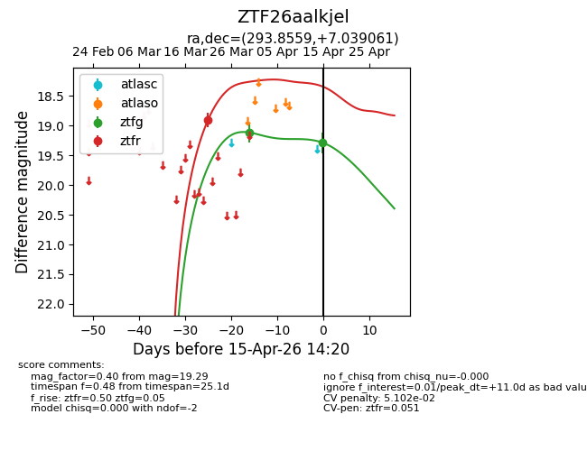
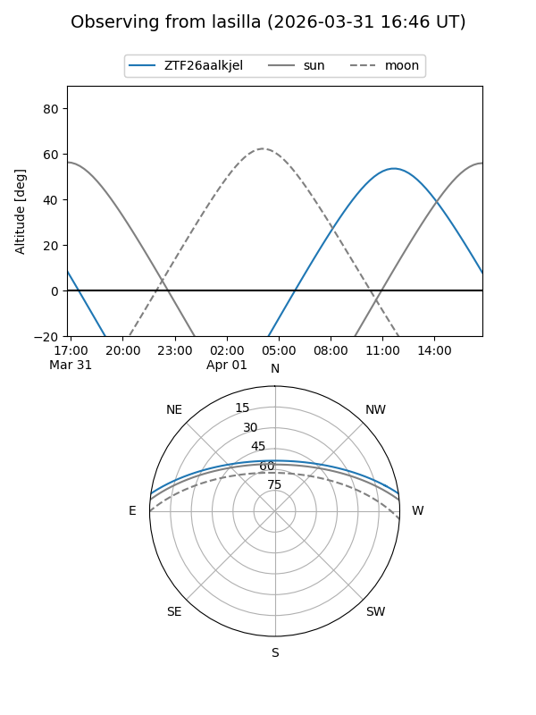
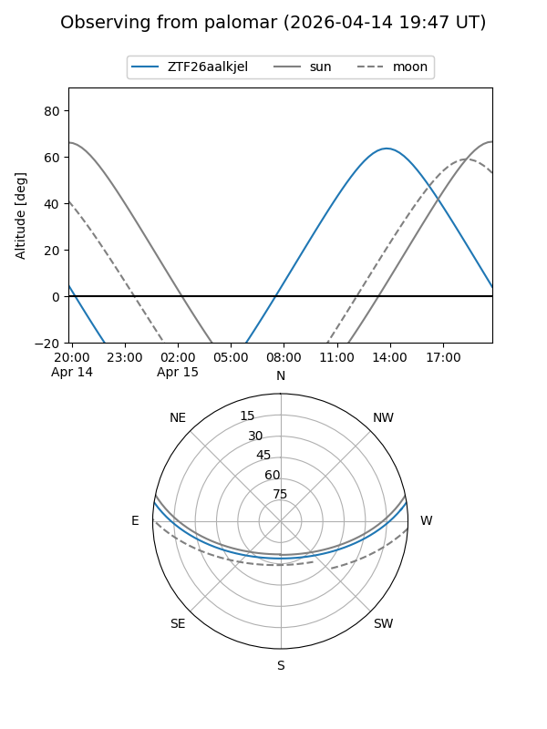
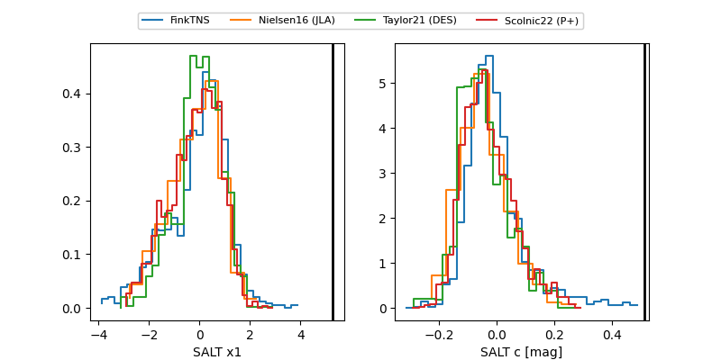

ZTF26aalkjel
Target ZTF26aalkjel at 2026-04-15 14:32
Aliases and brokers:
FINK: link
Lasair: link
ALeRCE: link
alt names
ZTF26aalkjel (ztf,fink_ztf)
Coordinates:
equatorial (ra, dec) = 293.8559,+7.03906
equatorial (HMS+DMS) = 19:35:25.42,+07:02:20.62
galactic (l, b) = (44.2723,-6.46548)
Flags:
likely cv
Photometry:
last ztfg=19.29, ztfr=18.90
2 ztfg, 1 ztfr detections
Lightcurve

Visibility


Additional plots
